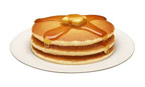

Pancake Page

A somewhat sensible page of pancakes
Pancakes should really be a staple in everyones life, they are easy to cook, enrish the soul and can be adapted to any taste
My personal favourite are thick american style pancakes with bacon or sausage and maple syrup, but the thin British ones are also a delight
Ingredients
- Self raising flour
- A large egg
- Milk
- Melted butter
- Yoghurt
- Toppings of your choice
Steps
- Mix everything except the toppings in a bowl
- Heat up a pan
- Cook the pancakes in batches until you have a enough for a stack
- Load up with toppings and enjoy!